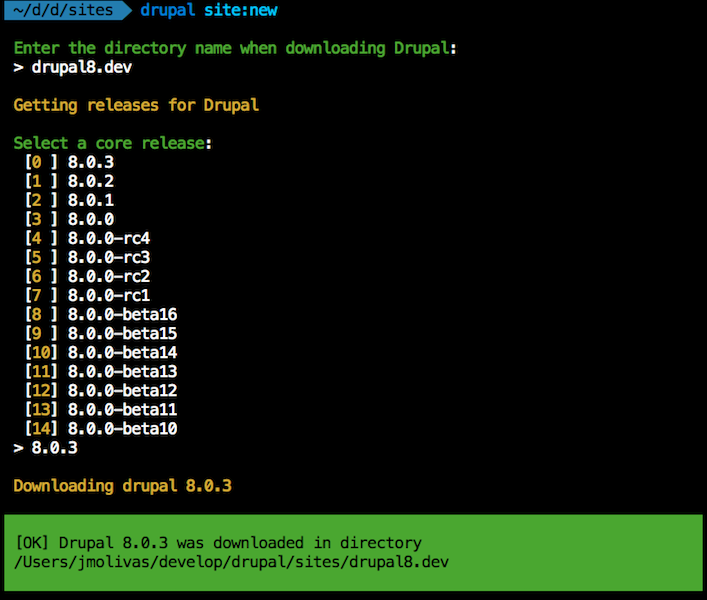

Drupal 8 Module Development
About me


I work for FFW
(and you should too)
This training is stolen based on:
Drupal 8 The Crash Course
Presented at ZendCon by Larry Garfield (@Crell)
https://www.palantir.net/presentations/zendcon2015-d8-crash-course/
Part I
- Basic concepts
- Composer
- The HTTP Lifecycle
- Tools
- Download and Install Drupal 8
Part II
- Creating a Module
- Creating a Custom Page
- Rendering a Twig Template
- Creating a Config Form
- Creating a Block (Plugin)
- Creating a Service
Basic concepts
Drupal is more technically advanced
Drupal 8: All Improved for Developers
Composer

Dependency Manager for PHP.
Download Composer
# Run this in your terminal to get the latest project version:
curl -sS https://getcomposer.org/installer | php
# Apply executable permissions on the downloaded file:
mv composer.phar /usr/local/bin/composer
# Apply executable permissions on the downloaded file:
chmod +x /usr/local/bin/composer
How to use Composer [1/2]
$ composer init
$ composer search faker
$ composer show fzaninotto/faker
$ composer require fzaninotto/faker:v1.3.0
How to use Composer [2/2]
/* composer.json */
{
"require": {
"fzaninotto/faker": "v1.3.0"
}
}
$ composer install
$ composer update
$ composer show --installed
The HTTP Lifecycle
In every web application, in any language, you always have one goal, read and understand the incoming HTTP request in order to create and return the appropriate HTTP response.
The Request/Response Flow
Routing
A route is a map from a URL path to a controller.
Controller
A controller is a PHP method or call-back that takes information from the HTTP request and constructs and returns an HTTP response.
Tools
- PHP built-in server + SQLite
- *AMP (Local, VM, Container)
- DevDesktop, Kalabox
- Drupal Console
- IDE (PHPStorm, Eclipse)
Download Drupal Console
# Run this in your terminal to get the latest project version:
curl https://drupalconsole.com/installer -L -o drupal.phar
# Accessing from anywhere on your system:
mv drupal.phar /usr/local/bin/drupal
# Apply executable permissions on the downloaded file:
chmod +x /usr/local/bin/drupal
# Copy configuration files to user home directory:
drupal init --override
Copy configuration files
drupal init

Download and Install
Drupal 8
Drupal 8 download
$ drupal site:new drupal8.dev
$ drupal site:new drupal8.dev 8.0.3
site:new

Drupal 8 installation
$ drupal site:install
$ drupal site:install standard --langcode="en"
--db-type="mysql" --db-host="127.0.0.1"
--db-name="drupal" --db-user="root"
--db-pass="root" --db-port="3306"
--site-name="Drupal 8 Site Install"
--site-mail="admin@example.com"
--account-name="admin"
--account-mail="admin@example.com"
--account-pass="admin"
--no-interaction
site:install
Creating a Module
Creating a module
- Create a new directory named 'hugs' at 'modules/custom' directory.
- Create an 'hugs.info.yml' file at 'modules/custom/hugs' directory.
Custom and contributed modules must be created at modules folder in the root directory.
modules/hugs/hugs.info.yml
name: Hugs
type: module
description: Examples of hugs
core: 8.x
package: Other
Generate module
$ drupal generate:module
Install module
$ drupal module:install hugs
Creating a Custom Page
Creating a Custom Page
-
Create a 'HugsController' Class with a 'hug' method at 'src/Controller' Directory.
Create a route with path to '/hug/{from}/{to}' at 'hugs.routing.yml' file.
Make sure your HugsController class extends from ControllerBase core class.
Generate Controller
$ drupal generate:controller
src/Controller/HugsController.php
namespace Drupal\hugs\Controller;
use Drupal\Core\Controller\ControllerBase;
class HugsController extends ControllerBase {
public function hug($from, $to) {
return [
'#type' => 'markup',
'#markup' => $this->t(
'Implement method: hug with parameter(s): $from, $to'
)
];
}
}
hugs.routing.yaml
hugs.hugs_controller_hug:
path: '/hug/{from}/{to}'
defaults:
_controller: '\Drupal\hugs\Controller\HugsController::hug'
_title: 'Hugs'
requirements:
_permission: 'access content'
src/Controller/HugsController.php
...
public function hug($to, $from) {
$message = $this->t('%from sends hugs to %to', [
'%from' => $from,
'%to' => $to,
]);
return ['#markup' => $message];
}
...
Rendering a Twig Template
Rendering a Twig Template
- Create 'templates/hug_page.html.twig' file.
- Create the 'hugs.module' file.
- Add 'hugs_theme' method and register template.
- Update render array on hug at HugsController class.
If you used the generate:module command hugs.module file already exists.
templates/hug_page.html.twig
{% trans %}
{{ from }} hugs {{ to }}
{% endtrans %}
hugs.module
function hugs_theme() {
$theme['hug_page'] = [
'variables' => ['from' => NULL, 'to' => NULL],
'template' => 'hug_page',
];
return $theme;
}
src/Controller/HugsController.php
...
public function hug($to, $from) {
return [
'#theme' => 'hug_page',
'#from' => $from,
'#to' => $to,
];
}
...
Creating a Config Form
Creating a Config Form
- Create a 'HugConfigForm.php' class at 'src/Form' Directory.
- Create a route with path to '/admin/config/hugs/hugconfig' at 'hugs.routing.yml'.
- Add hugs.links.menu.yml file and set system.admin_config_system as parent.
Make sure you use _form instead of _controller on route defaults.
src/Form/HugConfigForm.php [1/2]
namespace Drupal\hugs\Form;
use Drupal\Core\Form\ConfigFormBase;
use Drupal\Core\Form\FormStateInterface;
class HugConfigForm extends ConfigFormBase {
protected function getEditableConfigNames() {
return [
'hugs.hugconfig'
];
}
public function getFormId() {
return 'hug_config_form';
}
...
src/Form/HugConfigForm.php 2/2
...
public function buildForm(array $form, FormStateInterface $form_state) {
$config = $this->config('hugs.hugconfig');
$form['count'] = array(
'#type' => 'number',
'#title' => $this->t('Count'),
'#description' => $this->t('Default hug count'),
'#default_value' => $config->get('count'),
);
return parent::buildForm($form, $form_state);
}
public function submitForm(array &$form, FormStateInterface $form_state) {
parent::submitForm($form, $form_state);
$this->config('hugs.hugconfig')
->set('count', $form_state->getValue('count'))
->save();
}
}
hugs.routing.yml
hugs.hug_config:
path: '/admin/config/hugs/hugconfig'
defaults:
_form: '\Drupal\hugs\Form\HugConfigForm'
_title: 'HugConfigForm'
requirements:
_permission: 'access administration pages'
options:
_admin_route: TRUE
hugs.links.menu.yml (Menu Link)
hugs.hug_config_form_link:
title: 'Hugs configuration'
description: 'Configure the hugs system'
route_name: hugs.hug_config_form
parent: system.admin_config_system
hugs.routing.yml (add count)
hugs.hugs_controller_hug:
path: '/hug/{from}/{to}/{count}'
defaults:
_controller: '\Drupal\hugs\Controller\HugsController::hug'
_title: 'Hugs'
count: 0
requirements:
_permission: 'access content'
src/Controller/HugsController.php (count)
...
public function hug($from, $to, $count) {
if (!$count) {
$count = $this->config('hugs.hugconfig')->get('count');
}
return [
'#theme' => 'hug_page',
'#from' => $from,
'#to' => $to,
'#count' => $count
];
}
...
hugs.module (count)
function hugs_theme() {
$theme['hug_page'] = [
'variables' => ['from' => NULL, 'to' => NULL, 'count' => NULL],
'template' => 'hug_page',
];
return $theme;
}
templates/hug_page.html.twig
{% trans %}
{{ from }} hugs {{ to }} {{ count }} time.
{% plural count %}
{{ from }} hugs {{ to }} {{ count }} times.
{% endtrans %}
Creating a Block (Plugin)
Creating a Block (Plugin)
- Create a 'HugStatus' class at 'src/Plugin/Block'.
- Extend from BlockBase core class.
- Add @Block annotation.
- Add blockForm, blockSubmit and build methods.
Adding the @Block annotation, make this block discoverable by the system.
src/Plugin/Block/HugStatus.php [1/2]
namespace Drupal\hugs\Plugin\Block;
use Drupal\Core\Block\BlockBase;
use Drupal\Core\Form\FormStateInterface;
/**
* @Block(
* id = "hug_status",
* admin_label = @Translation("Hug status"),
* )
*/
class HugStatus extends BlockBase {
public function blockForm($form, FormStateInterface $form_state) {
$form['enabled'] = array(
'#type' => 'checkbox',
'#title' => $this->t('Hugging enabled'),
'#description' => $this->t('Check for Hugging enabled website'),
'#default_value' => isset($this->configuration['enabled']) ? $this->configuration['enabled'] : '',
);
return $form;
}
src/Plugin/Block/HugStatus.php [2/2]
...
public function blockSubmit($form, FormStateInterface $form_state) {
$this->configuration['enabled'] = $form_state->getValue('enabled');
}
public function build() {
$build = [];
$build['hug_status_enabled']['#markup'] =
'' . $this->configuration['enabled'] . '
';
return $build;
}
}
src/Plugin/Block/HugStatus.php (update)
public function build() {
$message = $this->configuration['enabled']
? $this->t('Now accepting hugs')
: $this->t('No hugs :-(');
return ['#markup' => $message];
}